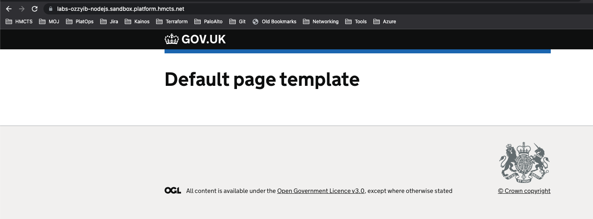

Section 2 - AKS Cluster
📣 NOTE: You need to be on the [VPN] to access the documentation.
Overview
AKS (Azure Kubernetes Service) is a core service for the HMCTS platform and hosts the majority of our applications. As part of the Platform Operations team, you’ll frequently interact with AKS for deployments, troubleshooting, and maintenance.
Understanding AKS is crucial because:
- Most applications run here: Nearly all HMCTS services are containerized and deployed to AKS
- You’ll debug production issues: When services fail, you’ll need to investigate pods, logs, and configurations
- Infrastructure changes impact applications: Understanding how AKS integrates with networking, DNS, and other Azure services is essential
- CI/CD flows through here: The deployment pipeline you’ll work with daily deploys to AKS clusters
What You Need to Know
As part of the Platform Operations team you will need to understand:
How AKS is deployed/updated/maintained: AKS Operations Guide
- Cluster upgrades and node pool management
- Monitoring cluster health and performance
- Scaling and capacity planning
How applications are built and deployed to AKS: Application Deployment Guide
- Container image build process
- Flux CD for GitOps-based deployment
- Helm charts and Kubernetes manifests
- Environment-specific configurations
What This Section Covers
For this guide we will not be creating a new AKS cluster (that’s complex infrastructure managed centrally). Instead, you’ll deploy an application to an existing AKS cluster, which mirrors the day-to-day work you’ll do.
You’ll gain hands-on experience with:
- Building container images and pushing to Azure Container Registry (ACR)
- Creating Kubernetes deployment manifests
- Configuring DNS records for your application (both public and private)
- Setting up Azure Front Door routing to your service
- Using Flux CD for GitOps-based deployment
- Troubleshooting common deployment issues
Application Deployment
Follow the Application Build/Deploy Guide to deploy your application to AKS.
Important Platform Operations-Specific Guidance
Naming Conventions
When following the guide, use these naming patterns to keep your resources organized:
- Application name:
labs-<YourGitHubUsername>-nodejs(e.g.,labs-johnb283-nodejs) - Namespace: Use the
labsnamespace (already exists in sandbox clusters) - DNS records:
- Public:
labs-<YourGitHubUsername>-nodejs.sandbox.platform.hmcts.net - Private:
labs-<YourGitHubUsername>-nodejs.service.core-compute-sbox.internal
- Public:
📝 Why lowercase matters: DNS, Front Door, and Kubernetes are case-sensitive. Use all lowercase in your names to avoid mysterious connectivity issues later.
Repositories You’ll Modify
You’ll be creating PRs in several repositories - here’s what each one does:
Your application repo (e.g.,
labs-yourname-nodejs)- Contains your application code
- Dockerfile for building container images
- Jenkins/Azure DevOps pipeline configuration
-
- Flux CD configurations that deploy your app to AKS
- Defines which image version runs in which environment
- HelmRelease definitions for your application
-
- Public DNS records (*.sandbox.platform.hmcts.net)
- CNAME records pointing to Front Door
-
- Private DNS records (*.service.core-compute-sbox.internal)
- Used for internal service-to-service communication
-
- Front Door configuration
- Routing rules, backend pools, and custom domains
Common Pitfalls & Solutions
⚠️ Image Build Failures
- Problem: Jenkins build fails with “Cannot connect to Docker daemon”
- Solution: Check Jenkins agent status, may need to trigger rebuild
- Problem: Build succeeds but image not in ACR
- Solution: Verify Jenkins has permissions to push to
hmctssandboxACR
⚠️ Flux Deployment Issues
- Problem: HelmRelease shows “not ready” status
- Solution: Check Flux logs:
kubectl logs -n flux-system deploy/helm-controller - Problem: Image pull errors in pod
- Solution: Verify ACR permissions and image tag in flux config matches built image
⚠️ DNS Propagation Delays
- Problem: Can’t access application via public DNS
- Solution: DNS changes can take 5-30 minutes to propagate. Use
nslookupordigto verify - Workaround: Test with Front Door direct URL first before custom domain
⚠️ Front Door Configuration
- Problem: “Validation State” stuck on “Pending” for custom domain
- Solution: Ensure DNS TXT record exists for domain validation. Check hmcts-sbox Front Door
- Problem: 404 errors when accessing application
- Solution: Verify routing rule points to correct backend pool and backend pool points to correct service
⚠️ Library Version Issues
- Problem: Build fails with deprecated dependencies
- Solution: Check the Troubleshooting Guide for known version conflicts
- Common fix: Update Node.js version in Dockerfile or package.json dependencies
Verification Steps
After deploying, verify everything works:
1. Check Container Image
# Verify your image exists in ACR
az acr repository show-tags --name hmctssandbox --repository labs-yourname-nodejs --output table
2. Check Kubernetes Resources
# Connect to sandbox AKS cluster
az aks get-credentials --resource-group cft-sbox-00-rg --name cft-sbox-00-aks --subscription DCD-CFTAPPS-SBOX
# Check your pod is running
kubectl get pods -n labs | grep labs-yourname-nodejs
# Check pod logs for errors
kubectl logs -n labs <pod-name>
# Check service endpoint
kubectl get svc -n labs | grep labs-yourname-nodejs
3. Check DNS Records
# Public DNS
nslookup labs-yourname-nodejs.sandbox.platform.hmcts.net
# Private DNS (requires VPN and connection to Azure network)
nslookup labs-yourname-nodejs.service.core-compute-sbox.internal
4. Check Front Door
- Navigate to hmcts-sbox Front Door
- Verify your custom domain shows “Validation State: Approved”
- Check routing rules include your application
- Check backend pool health status
5. Test Application Access
# Test via public URL
curl -I https://labs-yourname-nodejs.sandbox.platform.hmcts.net
# Should return HTTP 200 and your application response
What did i just create?
Container Image: A Docker image of your Node.js/Java application stored in the Azure Container Registry (ACR)
- This is what gets deployed to AKS
- Tagged with version/commit hash for traceability
- Pulled by Kubernetes when creating pods
Kubernetes Resources:
- Deployment: Defines desired state (number of replicas, container image, resource limits)
- Pod(s): Running instance(s) of your containerized application
- Service: Internal load balancer providing stable endpoint for your pods
- Ingress (if configured): Routes external traffic to your service
DNS Records:
- Public DNS:
labs-yourname-nodejs.sandbox.platform.hmcts.net→ Points to Front Door - Private DNS:
labs-yourname-nodejs.service.core-compute-sbox.internal→ Points to internal service for service-to-service communication
- Public DNS:
Azure Front Door Entries:
- Custom Domain: Your public DNS name with SSL/TLS certificate
- Backend Pool: Defines where Front Door sends traffic (your AKS ingress)
- Routing Rule: Maps incoming requests to the correct backend pool
- WAF Policy: Web Application Firewall protecting your application
Flux CD Configuration:
- HelmRelease: Declares what version of your app should run in sandbox
- Automated sync: Flux continuously monitors Git and ensures cluster matches desired state
Final result - Application default page

Understanding the Full Flow
Here’s what happens when a user accesses your application:
- User requests
https://labs-yourname-nodejs.sandbox.platform.hmcts.net - Public DNS resolves to Front Door IP
- Front Door (Azure CDN):
- Terminates SSL/TLS
- Applies WAF rules
- Routes to backend pool (your AKS ingress)
- AKS Ingress Controller receives request
- Kubernetes Service load balances to healthy pods
- Your application pod processes request and responds
Key Learnings
By completing this section, you’ve gained hands-on experience with:
✅ Container-based deployments: Building and managing Docker images
✅ Kubernetes fundamentals: Pods, services, deployments, and namespaces
✅ GitOps with Flux: Declarative infrastructure via Git
✅ DNS management: Both public and private DNS zones
✅ Azure Front Door: CDN, routing, and WAF configuration
✅ End-to-end application flow: From code commit to live service
These are the core skills you’ll use daily in Platform Operations when:
- Deploying new applications and services
- Troubleshooting production issues
- Performing infrastructure maintenance
- Supporting development teams with deployments
Points to note when going through the AKS steps
Use consistent naming:
labs-YourGitHubUsername-nodejswhen configuring both Public DNS/Private DNS for Application. This keeps everything traceable and easier to clean up later.Expect some troubleshooting: Library versions may be deprecated or need updating. This is normal and part of learning the ecosystem.
- Check the Troubleshooting Guide for known issues
- Ask in #platform-operations if you get stuck
PR review timing: You’ll need team members to review multiple PRs across different repos. Don’t wait until the end - submit PRs as you complete each configuration step.
Pipeline dependencies: Your application build must complete before Flux can deploy it. If deployment fails, check that:
- Jenkins/Azure DevOps pipeline succeeded
- Image was pushed to ACR successfully
- Image tag in flux config matches the built image
VPN required: You’ll need VPN access to view some monitoring and debugging tools. Make sure it’s connected when troubleshooting.
Certificate provisioning: SSL certificate for your custom domain can take 10-20 minutes. Don’t panic if HTTPS doesn’t work immediately after DNS changes.
Success Criteria
✅ You’ll know this section is complete when:
- Your application’s container image appears in ACR with correct tags
kubectl get pods -n labsshows your pod in “Running” statekubectl logsfor your pod shows successful application startup- Public DNS resolves:
nslookup labs-yourname-nodejs.sandbox.platform.hmcts.netreturns Front Door IP - Front Door custom domain shows “Validation State: Approved”
- Accessing
https://labs-yourname-nodejs.sandbox.platform.hmcts.netshows your application’s default page (not 404, not 502) - Application responds with expected HTTP status codes (usually 200)
If any of these checks fail, refer to the troubleshooting steps above or the verification commands to diagnose the issue.